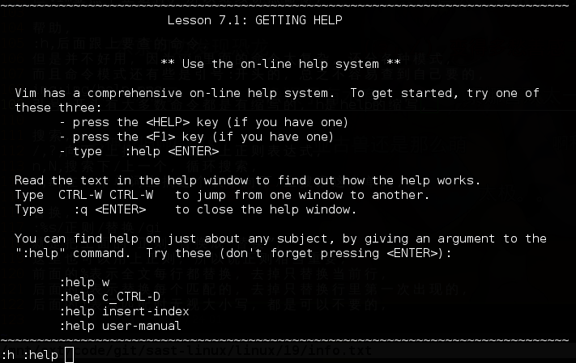
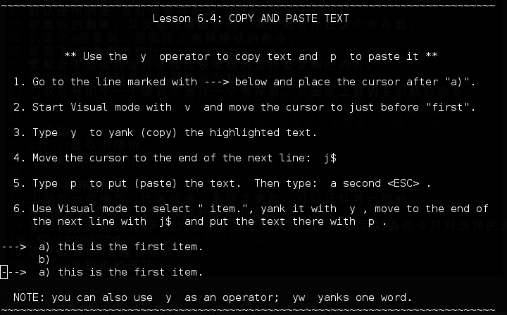

vim，还是讲点吧，编辑器之神。
vim不是真的像vi那么简单，配置后的vim可以非常强大，而自己配置的vim可以非常顺手，而且我配置的vimrc是linux和windows通用的，先说说怎么用，浏览器直接打开可能看到乱码，看看自己家目录下有没有.vimrc，把我的.vimrc写进去就OK了。
如上图，wget可以用来下载东西，在家目录下载这个.vimrc就可以了。
vimtutor，这是个命令，其实是vim的官方教程，而且这个教程本身可以用vim的操作，跟着教程走一遍就基本可以简单使用vim了。

其实还有中文的vimtutor，LANG=zh_CN.UTF-8 vimtutor，这是临时把代表语言的环境变量改成中文然后vimtutor。

首先，vim主要是在主键盘操作，也就是尽量不用方向键和小键盘那些。

然后其实vim命令是很复杂的。

但不需要都掌握，一些基本的用顺手了，其他的能学多少是多少。
用vim打开文件, vim 文件名 :q 退出， :w 保存， :e 文件名 打开另一个文件， 这三个加感叹号表示强制执行，:q!,:w!
下面也不打开什么文件了，就用vimtutor演示，在命令模式下，之前说过，vim打开是会运行家目录下的.vimrc，也就是说下面的命令都可以写在.vimrc里，每次自动执行，下面这命令是设置不兼容vi，如果兼容vi的话会有很多vim命令用不了，:set nocompatible，所有命令者可以用 数字+命令 表示多次执行，如8j，:!ls，冒号感叹号:!开头的可以执行shell的命令，首先是光标移动，hjkl,左下右上，四个在一排，比什么上下左右好用多了。

w,b,光标跳到下/上个单词，还有个e也是跳到行尾， $,^,光标跳到行尾/行首，还有个0也是跳到行首， C-u/C-d,上/下滚动半页， C-b/C-f,上/下滚动一页， C-e/C-y,上/下滚动一行， gg,瞬移到开头行， G,瞬移到最后行， 数字G,瞬移到指定行，8G就是跳到第8行， zz,瞬移到屏幕中间， 然后是删除， x，删除当前一个字符。
dd,删除当前行，D，删除当前行里，光标后面的字符。
然后是进入插入模式的命令。

iao,这三种，加上大小写共6种，都试试效果， i,a,当前字符的前/后面插入， I,A,当前行的开头/结尾插入， o,O,下/上一行插入。
进入了插入模式就可以写代码了，先说说退出到命令模式，除了左上角的Esc(escape)逃脱键表示返回，还可以用C-[输入Esc的值也能返回，还可以用C-c表示结束插入模式，我一般都是用C-[，还有临时退回命令模式，执行一条命令就返回插入模式的C-o，还是说说光标移动，显然这里就不能用hjkl移动光标了，只能用方向键，或者网上的许多人喜欢把C+hjkl映射到方向键。
:imap c-h:imap c-j :imap c-k :imap c-l 但我不喜欢，不喜欢在插入模式移动光标。
然后是删除，默认的backspace(退格键)和其他编辑器完全不同，vim的退格键只用来修改本次的插入，我用不惯，所以用下面的命令改成和别的一样，:set backspace=2，真正的删除键(Delete)，删除后面一个字符，正常使用，有了上面这些基本就能当成普通的编辑器用了，而且是个不需要方向键不需要小键盘不需要鼠标的编辑器，但vim显然不止这样，所以继续讲点命令，帮助，:h，后面跟上要查的命令，但是并不好用，因为vim里面的命令太复杂，还分各种模式，而且命令模式还有些是冒号:开头的，总之不容易查到自己要的。

顺便说说，冒号:开头有大多数命令都是有缩写的，h是help的缩写。
搜索， /,?,向下/上搜索，后面跟上正则表达式， n,N,搜索下/上一个，循环搜索， *,#,在一个单词上搞这个表示向下/上搜索这个单词。 替换， :%s/正则/替换/gi 就是把上面的“正则”替换成“替换”， 这里也可以用上正则，所以说正则相当重要， 前面的%表示全文每行都替换，去掉只替换当前行， 后面的g表示替换每个匹配的，去掉只替换行里第一次出现的， 后面的i表示匹配时无视大小写，都是可以不要的。 :set 可以设置很多东西，直接:set可以看到当前的设置， :set ic 搜索时无视大小写，加个no就取消:set noic :set fenc=utf-8 设置文件编码，可以改成各种编码， :set fileencodings=ucs-bom,utf-8,cp936,ucs-bom,shift-jis,gb18030,gb2312,latin1 这个要放在.vimrc才有用，是在打开文件时按这个顺序判断文件的编码， :set ff=unix 改文件换行符的类型，dos,unix,mac。 复制粘贴，剪切板， :reg 这个命令可以看寄存器(register)，其实就是剪切板， 可以看到这个剪切板里有很多寄存器。
默认使用的是"双引号寄存器，前面说的删除，其实都能看成剪切，东西都会存在这个寄存器，y,这个y是复制，后面跟上光标移动的命令，敲两下y是复制当前行，要配合下面说的选择才能比较准确的选择要复制的内容，p,P,粘贴，分别是在后面和前面粘贴。

u,撤销，ctrl-r是取消撤销。

选择模式，上面的一些操作，比如替换，删除之类的，可以只针对一部分，用v键进入选择模式,移动光标然后执行命令，如果执行的是冒号:开头的命令，会自动出现:'<,'>表示后面命令只对选择的这部分。

还有shift-v是整行选择。

ctrl-v是矩形的选择。
这些选择都是结合别的命令使用的，可以随便试试，剩下的时间主要自己操作一番，看看vimtutor,如果能喜欢上vim，就花个几天，几周来学习一下vim的命令，还有vim的脚本语言，作为一个脚本语言是很强大的，还有可以用各种map，把一些组合键和F键设置成编译运行当前写的代码，虽然我并不喜欢这样，还有些其他常用的设置，可以看看我的.vimrc，还有页面下方的链接，别人配置的vim，可以试试。